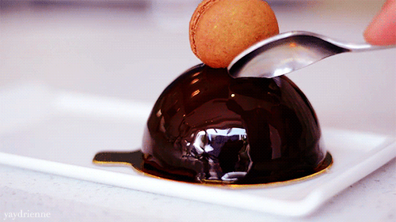

Présentation de l'entreprise
~ Inventez vos plaisirs. Offrez le luxe de la fantaisie. Enchantez l’instant. ~
Héritier de quatre générations de boulangers pâtissiers italiens, Sebastian Michaelis a commencé sa carrière à l’âge de 14 ans, auprès de Gaston Lenôtre. Célébré en France, au Japon et aux États-Unis, celui que Vogue a surnommé « Picasso of Pastry » a apporté à la pâtisserie goût et modernité. Avec « Le plaisir pour seul guide », Pierre Hermé a inventé un univers de goûts, de sensations et de plaisirs. Son approche originale du métier de pâtissier l'a conduit à révolutionner les traditions les mieux établies. Par exemple, alier l'art de l'architecture à la patisserie, jouant sur les formes géométriques, ou encore « utiliser le sucre comme le sel, c’est-à-dire un assaisonnement qui permet de relever d’autres nuances de saveurs » et enfin remettre en question son propre travail, en explorant de nouveaux territoires du goût ou en revisitant régulièrement ses propres recettes. Tout cela a valu à Sebastian Michaelis de nombreux qualificatifs élogieux – « Pastry Provocateur » (Food & Wine), « Pâtissier d’avant-garde et magicien des saveurs » (Paris Match), « Kitchen Emperor » (New York Times), « The King of modern pâtisserie » (The Guardian) - les honneurs et les décorations aussi, mais avant tout la reconnaissance admirative des gourmands.
